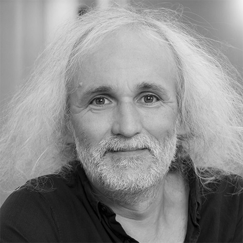
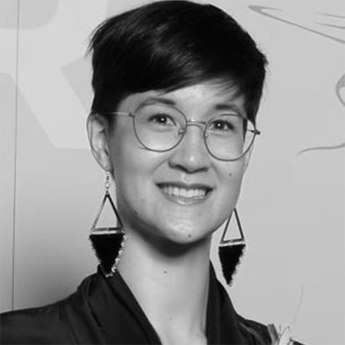
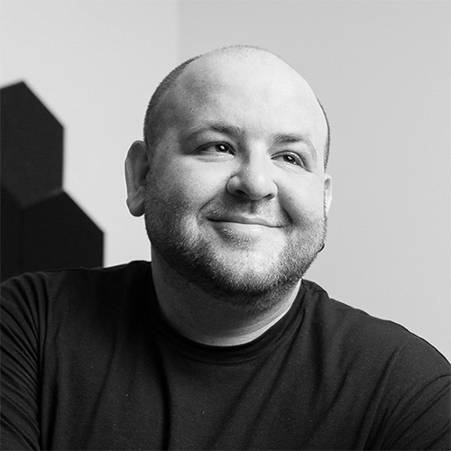

- 24 octobre 2026 · Université de Montréal -
Processing
Community Day
Journée de la communauté Processing
2026
Une journée pour célébrer l'art, le code et le logiciel libre à l'occasion des 25 ans de la fondation Processing.
S'inscrireÀ propos
Le Processing Community Day (PCD) est un événement local et indépendant organisé par des membres de la communauté du code créatif. Il s'inscrit dans un réseau international de rencontres portées par des passionné·es de Processing et soutenues par la Processing Foundation (s'ouvre dans un nouvel onglet).
Nous sommes une équipe interdisciplinaire et nous organisons le PCD à Montréal pour réunir artistes, développeur·euses, étudiant·es et curieux·ses autour du code créatif et de l'art numérique, dans un esprit d'ouverture, de partage, d'expérimentation et d'accessibilité.
Qu'est-ce qu'on fait le 24 octobre pour le PCD de Montréal?
On se retrouve pour créer, expérimenter et partager autour du code créatif.
Tout au long de la journée, les participant·es imagineront et programmeront une œuvre visuelle à l'aide de Processing. On code, on échange des idées, on expérimente et on s'entraide, puis on termine la journée en présentant les créations réalisées.
Que vous soyez débutant·e, curieux·se ou expérimenté·e, tout le monde est bienvenu. Aucune expérience en programmation n'est nécessaire : il suffit d'avoir envie de découvrir, de créer et de partager.
Rendez-vous au campus MIL de l'Université de Montréal!
Qu'est-ce que Processing?
Processing est un langage de programmation et un environnement de développement créés pour les artistes, designers et créateurs visuels. Depuis plus de 20 ans, ce logiciel libre permet d'apprendre à coder à travers le dessin, l'animation et l'interactivité.
Sa version pour le web, p5.js, rend la création visuelle accessible à toutes et tous, directement dans le navigateur - sans installation. Vous pouvez faire l'expérience de p5.js live en interagissant avec l'animation dans le fond de la section Accueil.
Pour en savoir plus (en anglais)
Programme
24 octobre 2026 · Événement en français
- 10h30 – 11h00 Arrivée et café Accueil des participant·es
- 11h00 – 11h30 Introduction et tour de table Présentation de la journée et des participant·es
- 11h30 – 13h30 Programmation d'une œuvre d'art
- 13h30 – 14h00 Pause dîner
- 14h00 – 16h30 Programmation d'une œuvre d'art (suite)
- 16h30 – 17h00 Pause
- 17h00 – 17h30 Présentation de Marion Schneider Conférence invitée
- 17h30 – 18h30 Présentation des œuvres Partage des œuvres programmées au cours de la journée
Des collations seront servies tout au long de la journée, et de la pizza sera offerte au dîner.
Invité·e : Marion Schneider
Marion Schneider est une artiste numérique non-binaire qui vit et travaille à Montréal. Sa pratique interdisciplinaire, engagée et poétique, explore le sentimentalisme, la queerness et l'écologie à travers la robotique, les installations et l'art web.
schneidermarion.net (s'ouvre dans un nouvel onglet) →Participer
Inscription
La participation est gratuite mais les places sont limitées. Réservez la vôtre dès maintenant pour rejoindre la communauté Processing le temps d'une journée.
Réserver ma place (s'ouvre dans un nouvel onglet)Aucune expérience en programmation n'est requise.
S'y rendre
Adresse
Bibliothèque Hubert-Reeves, Aile A
Campus MIL - Université de Montréal
1375, avenue Thérèse-Lavoie-Roux
Montréal (Québec) H2V 0B3
Nous encourageons fortement l'utilisation du transport collectif ou actif pour vous rendre sur le campus.
Métro
Stations Acadie ou Outremont (ligne bleue), à environ 5 minutes à pied.
Autobus
Lignes 80, 119, 160 et 161 de la STM. Horaires et trajets sur stm.info (s'ouvre dans un nouvel onglet).
Vélo
Plusieurs stations BIXI se trouvent à proximité du campus.
Accessibilité
Le bâtiment est accessible aux personnes à mobilité réduite.
FAQ
Dois-je apporter mon ordinateur portable?
Oui, idéalement. Si vous n'en avez pas, les bibliothèques de l'UdeM vous en fourniront un sur place. Aucune installation préalable n'est requise, tout se fait dans le navigateur.
L'événement est-il accessible aux débutant·es?
Absolument. Le Processing Community Day s'adresse à toutes les personnes curieuses, peu importe leur niveau en programmation.
Dois-je faire partie de la communauté UdeM?
Non, c'est ouvert à toutes et tous.
Dans quelle langue se déroule l'événement?
L'événement se déroule entièrement en français.
La journée est-elle gratuite?
Oui, l'inscription et la participation sont entièrement gratuites, dîner inclus.
Puis-je proposer un atelier ou une conférence?
Nous sommes ouvert·es aux suggestions pour les prochaines sessions. Écrivez-nous via la section Contact pour soumettre votre proposition.
Contact
Une question, une idée, une envie de collaborer? Écrivez-nous.
pcd@bib.umontreal.caOrganisateur·rices
-

Benoit Baudry
Professeur titulaire - Université de Montréal
GitHub (s'ouvre dans un nouvel onglet) Site (s'ouvre dans un nouvel onglet) Courriel
-

Lena Krause
Candidate au doctorat - Université de Montréal
GitHub (s'ouvre dans un nouvel onglet) Site (s'ouvre dans un nouvel onglet) Courriel
-
Marion Schneider
Artiste
GitHub (s'ouvre dans un nouvel onglet) Site (s'ouvre dans un nouvel onglet) Courriel
-
Indiana Delsart
Bibliothécaire - Université de Montréal
-

Emir Chouchane
Conseiller en médiation technologique - Université de Montréal